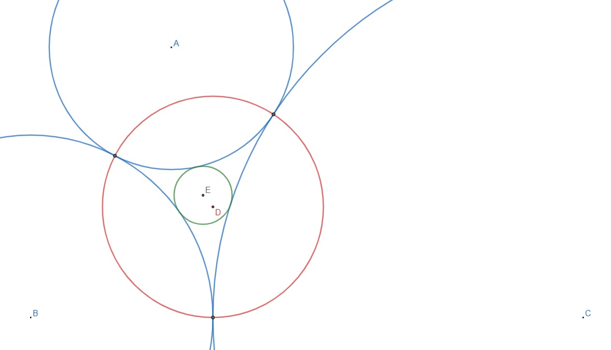
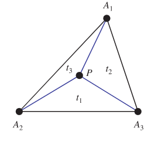

Project Euler 727
Project Euler 727
题目
Triangle of Circular Arcs
Let \(r_a\), \(r_b\) and \(r_c\) be the radii of three circles that are mutually and externally tangent to each other. The three circles then form a triangle of circular arcs between their tangency points as shown for the three blue circles in the picture below.

Define the circumcircle of this triangle to be the red circle, with centre \(D\), passing through their tangency points. Further define the incircle of this triangle to be the green circle, with centre \(E\), that is mutually and externally tangent to all the three blue circles. Let \(d=\vert DE \vert\) be the distance between the centres of the circumcircle and the incircle.
Let \(\mathbb{E}(d)\) be the expected value of \(d\) when \(r_a\), \(r_b\) and \(r_c\) are integers chosen uniformly such that \(1\leq r_a<r_b<r_c \le 100\) and \(\text{gcd}(r_a,r_b,r_c)=1\).
Find \(\mathbb{E}(d)\), rounded to eight places after the decimal point.
重心坐标(Barycentric coordinates)
重心坐标，表示三角形中的三个顶点的一组“质量”\((t_1,t_2,t_3)\)，这三个质量可以唯一确定这个点在平面中的位置。为了规范化，一般令这三个值满足\(t_1+t_2+t_3=1\)。

可以看出，顶点在这个坐标系下的坐标有：\(A_1(1,0,0),A_2(0,1,0),A_3(0,0,1)\)
解决方案
在\(\triangle ABC\)中，点\(D\)是其内心。
点\(E\)是\(\odot A,\odot B,\odot C\)的内索蒂圆圆心，也叫做\(\triangle ABC\)的Equal Detour Point.
三角形内部点\(E\)的位置满足：\(|AE|+|BE|-|AB|=|AE|+|CE|-|AC|=|BE|+|CE|-|BC|\)。
设\(|BC|=a,|AC|=b,|AB|=c\)，那么点\(D\)重心坐标为\(D(a,b,c)\)。
点\(E\)的重心坐标为\(E\left(a+{\dfrac {\Delta }{s-a}},b+{\dfrac {\Delta }{s-b}},c+{\dfrac {\Delta }{s-c}}\right)\)，其中，\(\Delta\)是三角形的面积，\(s\)三角形的半周长。
假设规范化后的两点坐标为\(P(x_1,y_1,z_1),Q(x_2,y_2,z_2)\)，令\(x=x_2-x_1,y=y_2-y_1,z=z_2-z_1\)，那么\(\overrightarrow {PQ}=(x,y,z)\)。
重心坐标系两点距离公式为：\(d^2=|\overrightarrow {PQ}|=-a^2yz-b^2zx-c^2xy\)。直接使用此公式即可计算\(|DE|\)的值。
代码
1 |
|